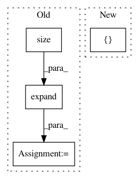

b70e026702c590618552ab857fc6661662ab72f2,allennlp/modules/matrix_attention/linear_matrix_attention.py,LinearMatrixAttention,forward,#LinearMatrixAttention#Any#Any#,67
Before Change
matrix_2: torch.Tensor) -> torch.Tensor:
// TODO(mattg): Remove the need for this tiling.
// https://github.com/allenai/allennlp/pull/1235//issuecomment-391540133
tiled_matrix_1 = matrix_1.unsqueeze(2).expand(matrix_1.size()[0],
matrix_1.size()[1],
matrix_2.size()[1],
matrix_1.size()[2])
tiled_matrix_2 = matrix_2.unsqueeze(1).expand(matrix_2.size()[0],
matrix_1.size()[1],
matrix_2.size()[1],
matrix_2.size()[2])
combined_tensors = util.combine_tensors(self._combination, [tiled_matrix_1, tiled_matrix_2])
dot_product = torch.matmul(combined_tensors, self._weight_vector)
return self._activation(dot_product + self._bias)
After Change
matrix_1: torch.Tensor,
matrix_2: torch.Tensor) -> torch.Tensor:
combined_tensors = util.combine_tensors_and_multiply(self._combination,
[matrix_1.unsqueeze(2), matrix_2.unsqueeze(1)],
self._weight_vector)
return self._activation(combined_tensors + self._bias)
In pattern: SUPERPATTERN
Frequency: 3
Non-data size: 4
Instances
Project Name: allenai/allennlp
Commit Name: b70e026702c590618552ab857fc6661662ab72f2
Time: 2018-08-21
Author: mattg@allenai.org
File Name: allennlp/modules/matrix_attention/linear_matrix_attention.py
Class Name: LinearMatrixAttention
Method Name: forward
Project Name: asappresearch/sru
Commit Name: faf3aa876462323f2fa721ebd633752d6489808f
Time: 2020-09-18
Author: taolei@csail.mit.edu
File Name: sru/modules.py
Class Name: SRU
Method Name: forward
Project Name: open-mmlab/mmdetection
Commit Name: a6236b789b8f4e2e66c8379199f40ecef9afce06
Time: 2020-04-21
Author: 40779233+ZwwWayne@users.noreply.github.com
File Name: mmdet/core/anchor/anchor_generator.py
Class Name: AnchorGenerator
Method Name: valid_flags